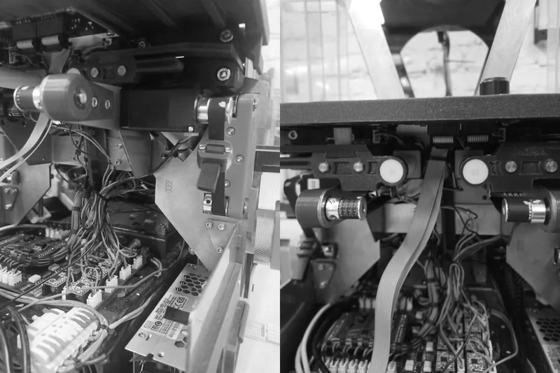
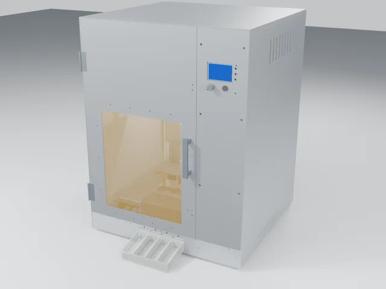

01
Hand labels and ink
Handwriting is misread, ink marks can fade in processing reagents, and label printers need ribbons and cartridges.
Specimen ID for pathology labs
We build the specimen-ID chain for pathology labs: our own histology cassettes, a fiber-laser printer that marks them straight from the lab system and, next, a slide printer.

Engraved, not printed. A DataMatrix code and the case text, marked into the plastic.
The problem
Every tissue sample travels through the lab in a small plastic cassette. The mark on that cassette is what ties the tissue to the patient.
01
Handwriting is misread, ink marks can fade in processing reagents, and label printers need ribbons and cartridges.
02
Each sample passes grossing, processing, embedding, cutting and staining before a pathologist sees it.
03
Scanned slides and AI tools help only when every image is tied to the right patient.
In oncology, the wrong label means the wrong treatment.
Product line
Ready
Our own 8-cavity hot-runner injection mould, built by an EU toolmaker and proven in serial production.
Pre-series
Engraves a DataMatrix code and case text into each cassette, straight from the lab system.
Concept
UV-laser marking of glass slides on the same software and electronics platform.
Cassette marking slide digital scan One ID from grossing to diagnosis.
HistoPrint laser printer
A fiber laser marks a 2D DataMatrix code and human-readable text into the plastic itself. There is nothing to smudge and no consumable besides the cassette.
4
parallel feed streams
40/min
design throughput, cassettes
160
cassettes loaded at once
2D
DataMatrix code plus case text
LIS
jobs via REST API or a shared folder
0
ink cartridges or ribbons
Every marking is logged for audit. The printer fits on a lab bench: 445 × 582 × 423 mm, about 10.5 kg.
Development status. HistoPrint is in pre-series development. It is not CE marked and is not yet available for sale. Throughput and capacity are design ratings from our technical specification.
How it works
01
Creates the case and sends the cassette job.
02
Queues jobs over four streams and engraves the DataMatrix code and text.
03
Any station can scan the code, with no retyping.
04
Keep the case ID: the base for digital pathology and AI.
Integration runs through a REST API or a watched shared folder. A single laser gatekeeper serialises jobs from all four streams. The printer itself has no AI inside: its job is the first link in the chain, a reliable machine-readable ID that everything downstream depends on.
Technology

Our own control boards drive 8 stepper motors and 16 sensors.
STM32 and FreeRTOS motion control of the cassette feed.
A Linux/Qt core with four stream state machines and one laser gatekeeper.
Developed under the IEC 62304 Class C process with ISO 14971 risk management. The documentation set is in progress; the code base is about 29,000 lines of our own code.
Histology cassettes
Every lab uses cassettes every day. Our 8-cavity hot-runner mould was built by an EU toolmaker and is proven in serial production.
~1,200
cassettes an hour from our mould
~5M
cassettes a year on two shifts
35,000
cassettes a mid-size lab uses per year (our estimate)
Cassettes open the door to labs. The printer, and later the slide printer, serve the same customers. Each lab that uses our cassettes is a ready customer for the printer.
Roadmap
In place
8-cavity hot-runner mould built by an EU toolmaker; proven in serial production.
2023–2025
Device, electronics, firmware and software developed in-house.
2026
Production marking confirmed; software v1.0.0 release candidate; slide printer designed.
2027 · plan
Cassette production in Serbia, pilot labs, distributors, CE marking path.
No outside investors so far: everything above was built with our own funds.
Labs use several slides per case: the same customers, a larger consumable market.
Our control software, electronics and feed know-how, with a UV laser for standard glass slides.
Concept design and prototype drawings are ready; mock-up tests come next.

AI for compliance
CE-Model is our in-house tool: an open language model running on our own hardware, a registry of EU laws and standards, and automatic checks for missing sections and withdrawn standards.
01
Device, hazards, power and intended use.
02
Drafts manuals, risk assessments and declarations.
03
Laws and standards are checked against a registry.
04
A qualified specialist reviews and signs.
0.893
automatic score on 144 benchmark tasks; expert review is next
EN + DE
Word drafts: English original and German translation
Local
runs on our own hardware: no data leaves the company
CE-Model is a working prototype. Today it is set up for machinery documentation; we plan to add templates for our own IVD files to speed up CE marking of our products.
Why Serbia
Serbia trades duty-free with the EU and the CEFTA countries, and its labs are mid-size and price-sensitive: the segment we design for.
01
Start cassette production with a contract moulder in Serbia.
02
Partners in Serbia and neighbouring countries.
03
Two or three printers in pathology labs.
04
CE marking, then the EU and the Middle East.
Work with us
Contract injection moulding in Serbia for our cassette mould.
Lab-equipment partners for Southeast Europe and the EU.
Two or three pathology departments to run HistoPrint.
Regulatory guidance and a path to CE marking.
Seed investors and strategic partners.
Contact
Whether you run a pathology lab, distribute lab equipment, mould plastics or invest in medical technology, we would like to hear from you.
Write to us